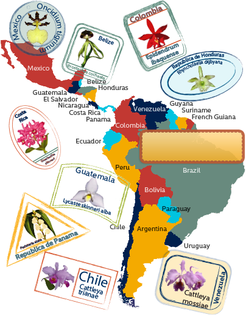
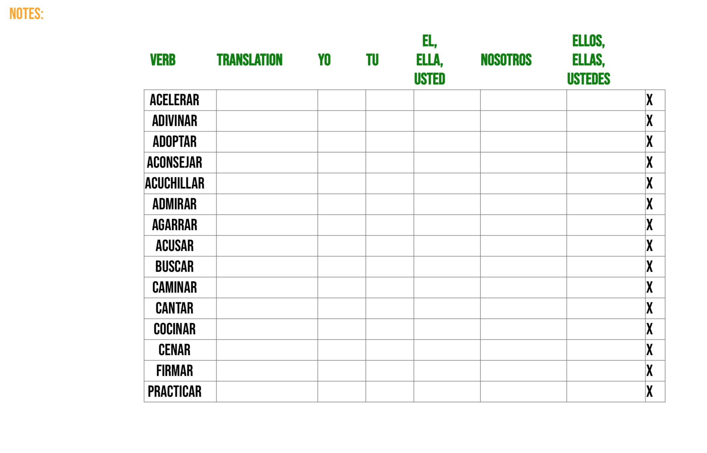
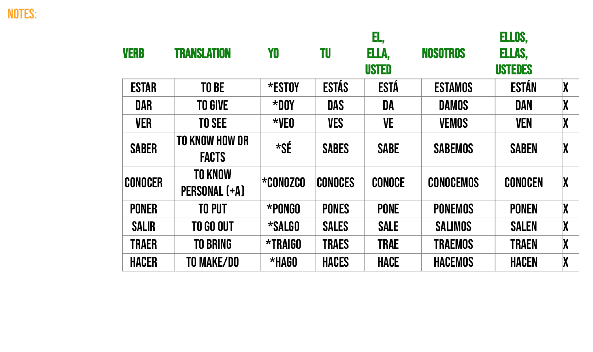

How to Use this page:
This page is a tool to build a (Latin America) Spanish Conjugation Worksheet
- Type the verb in spanish in the "verb" form input space.
- Type your language translation in the "translation" form input space.
- Type the corresponding conjugations of the verb.
- Hit "submit" to add to the table.
- If you close the tab, or navigate away from the page - your table will be saved permanently in you browser until you select DELETE TABLE(even if you hit refresh).
- !IMPORTANTE! Do not hit "DELETE TABLE" unless you are ready to completely clear your conjugations! This is a permanent deletion!
por ejemplo:


Suggestions:
- Add an * to special case or irregular conjugation forms. EX: yo: *hago*
- PRINT your sheet to study for exams.
- For teachers, simply add the verbs needed without the translations or conjugation forms and print for your students to fill out.
- Make a table for AR verbs, PRINT, and then hit Delete Table. Make a new table for IR verbs, Irregular Verbs, and so forth.
- !IMPORTANTE! Do not hit "DELETE TABLE" unless you are ready to completely clear your conjugations! This is a permanent deletion!
Back to Spanish Conjugations Table
Please give any feedback here. Gracias!